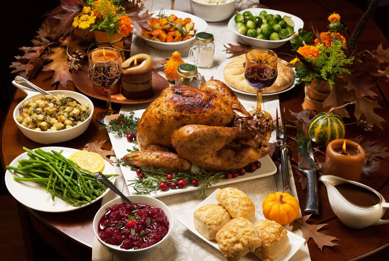

Food is a feast! Have fun and enjoy it!
but always take care of your body and your health,
without it, you will not enjoy special moments in your life.
"Balance and Moderation is the secret"
Do not get confused, FAST FOOD is not only hamburguers or hot dogs and HEALTHY does not mean No Flavor.
As a wife and mother of two girls, concerned about the choices we were making when was about food,
I decided to create this website by reading, listening and learning everyday that a good healthy food does not need a lot time to prepare it, it only needs organization, cooperation and commitment.
If you are a busy worker, student, busy mom or just a parent or grandparent who is looking to prepare or where to buy healthy food.
This website is for you!
You will find tips about how to save time preparing a delicious healthy food, the secret is to prepare ahead of time, choose a day of the week to cut, bake, cook so you can be ready to make your breakfast, lunch or dinner, also grab and go snacks in your rush hour. Use natural ingredients for flavors. Do not waste your money in something that is not good for your body and only make you feel bloated, tired and sick.
Make a delicious food with ingredients that has vitamins that you need during a busy day.
I have shared recipes that my family and I enjoy on a daily basis. Of course I have to include recipes from my beautiful country Peru.
Peruvian food is delicious, also healthy, you can find any ingredients or eat at these Peruvian places
Go to Bottom
HAVE A HEALTHY AND HAPPY THANKSGIVING

"Peruvian food is filled with superfoods, many foods we've come to call “Superfoods” originated in Peru like quinoa, maca, camu camu, purple corn, a fruit called aguaje, and pichuberry."..
Chef Franco Noriega.
“PERUVIAN PRIDE, it all started with our cuisine” ....Mitsuharu Tsumura
"We feel like we have the opportunity to share with the world our lovely food that we have been hiding for a long time"....
Chef Gaston Acurio
Peruvian Supermarkets/Groceries
Peruvian Restaurants